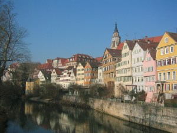
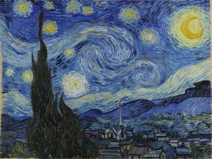
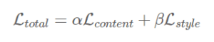
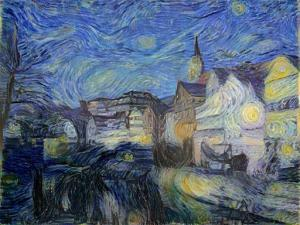
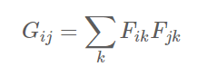
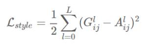
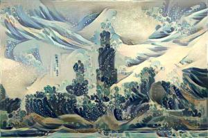
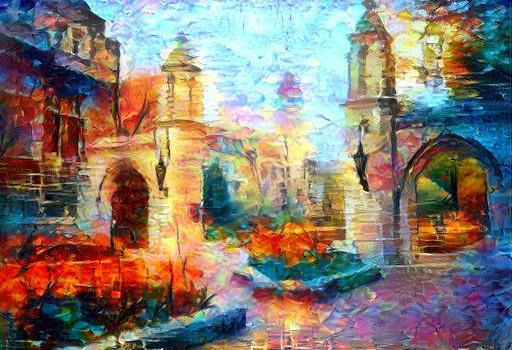

In my senior year of college finish a project based on the work of Leon A. Gatys, Alexander S. Ecker, and Matthias Bethge (https://arxiv.org/abs/1508.06576. If you’re reading this article, I highly suggest taking a look at this white paper). The premise of the experiment was to make an image with the content of one image in the style of a second image. Here is an example: On the left you can see three images. The first is the content image, the second is the stly image, and the third is the final, merged image.

I was blown away looking at these results, and once I saw their pictures I knew I had to try and recreate the code myself. Now artistic style transfer can be considered a problem based off of two smaller sub-problems: content preservation and texture transfer. Ideally, a style transfer algorithm should be able to extract the objects from a target image and inform onto it the semantic content of another target image. To do this, we use this simple equation:

Where Lcontent is the difference the image is content wise and Lstyle is the difference in style. Alpha and beta are just values that altar how important we want the two to be. And in theory, if we minimize this function, we have a perfectly merged image that shares the most amount of content with the base image and the most amount of style with the transfer image. So now all we need is to figure out how to calculate Lcontent and Lstyle to make some sweet looking images. We’ll start at the first problem, which is content extraction. In the article above, the authors introduce a simple but elegant algorithm called neural style transfer. The baseline method for neural style transfer is to extract the content of one image and style of another and combine them into a new image with feature of both using a convolutional neural network. Now convolutional neural networks are usually used for image recognition or object detection, but it actually is the perfect neural network for this problem. This is because the main building blocks of convolutional networks are the convolution layers, which is where a set of feature detectors are applied to an image to produce a feature map, which is essentially a filtered version of the image. A trained network for image recognition is built to extract the main features of an image in order to identify the content. And this is all we need! So if we take the image that is generated at certain convolutional layers, it should have the main features of the base image without the artistic stlye.

So given a generated image, we use this formula to calculate Lcontent:
Where F is the feature map of our content image and P is the feature map of our generated image. What’s really cool about this is that by taking the derivative of our content function, we can use standard back-propagation to change our random picture until it generates the same response in any convolutional layer as our original image. Now unlike our content calculation, we can’t just calculate the mean squared error from a specific feature map to extract the style from an image. Instead, we look at the style layers and calculate the Gram-matrix for the tensor outputs by the style-layers. This might sound a bit complicated, but it’s actually not. We basically use the following formula to calculate how different two images are in style:

And then use almost the same formula to calculate Lstyle:

Now we have all the pieces to minimize our original formula. And that’s it! Now all we need to do is give or program a content image and a style image, have it run until it minimizes the function, and we’ll have an image with the content representation of one photograph and the stylistic representation of another. If you want to see how I implemented this, my code is on my GitHub account. Down below are few of the results I generated, and there is a folder in my account that has all of the pictures generated as well.

